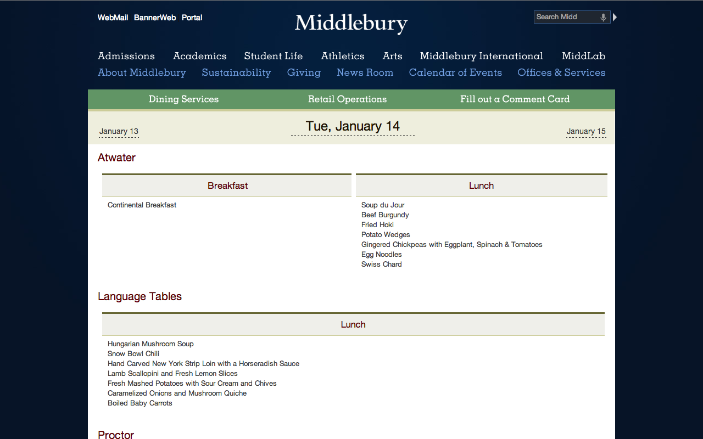
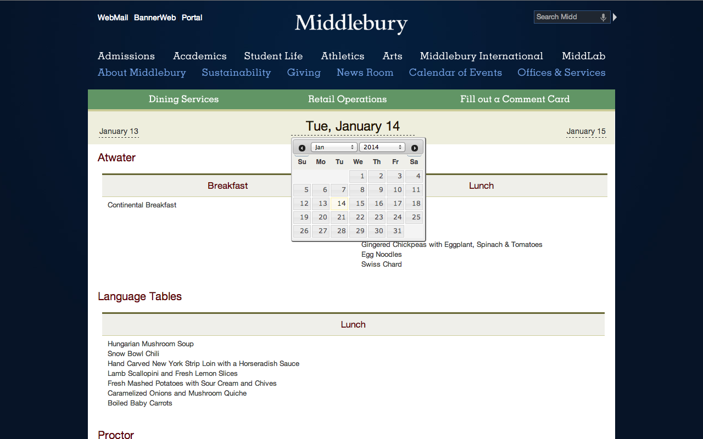

Updated January 14, 2014
Middlebury Menu Extension
A Chrome extension for the Middlebury menu.
Install
You can get the extension in the Chrome Web Store or install it right here.
Features
- Clean, easy to read dates.
- One click buttons for the next and previous dates.
- One click from the calendar popup to any date.
Screenshots
 Bugs and Features
Found a bug or have a feature request?
- Open an issue on GitHub.
- Contact @DanaRSilver.
Open Source
This project is open source and released under the MIT License. The code can be found on GitHub.